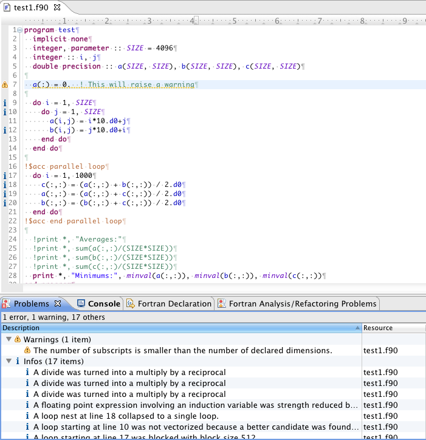

When you build a C/C++ or Fortran application, the output from the compiler (including any error messages) is displayed in the Console view. However, CDT/Photran can "recognize" the error and warning messages from many popular compilers, placing the problem description in the Problems view and marking the corresponding line in the source file with an icon.
CDT does not, by default, recognize error or warning messages from the Cray, PGI, or Open64 C/C++ compilers. However, this is possible when PTP is installed.
To recognize errors and warnings from the Cray, PGI, or Open64 C/C++ compilers:
The Cray C/C++ and Fortran compilers can produce informational messages about what compiler optimizations were, or were not, performed. When the Cray error parsers are enabled (see Configuring Error Parsers above), Eclipse will also recognize these informational messages, marking the corresponding source lines.
To instruct the Cray C/C++ or Fortran compiler to produce informational messages, change your Makefile as follows:
